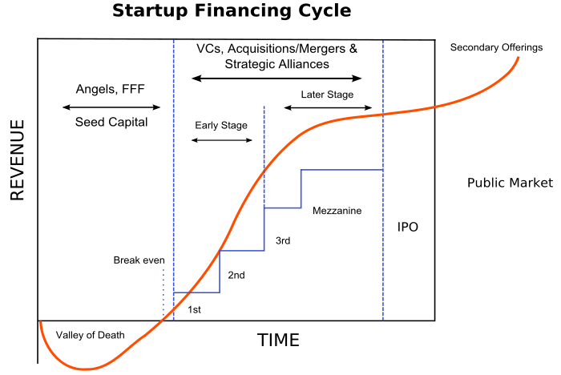

We’ve done many pitches. Every good entrepreneur has a story to tell. It’s what you do and maybe even who you are. You are the girl or guy that lives and breathes the mission of your company. Especially when starting up. Because most early startups are more of a story than a real company. You need to get people on board and become a master in the art of pitching. So own it.
We get pitched a lot as well. As a studio we invest, but mostly with our time and resources. And those are way more valuable than just money. Time is the only thing you can’t scale. So we cherish it and spend it on things that matter. More money isn’t always the right solution. It only buys you more time for your team to execute or as we like to call it; more ‘runway’.
Here are some of the resources you need to read before pitching. Not just for investors, but also for your mom or even better your grandma. If they understand what you do and why you do it, you are on the right track.
1. The Pitchdeck
An informative overview that inspires
Start of by watching Simon Sinek tell how it is. We like his thinking. “People don’t buy what you do, they buy why you do it”.
A pitch comes in many forms. Which one you need depends on the context. If you meet someone for 30 seconds in an elevator, you certainly aren’t going to get your Macbook out and start flipping through some slides. Please don’t. It’s all about making a lasting impression and try to be clear and concise. Less is more.
Although it sounds like overkill, a well-prepared entrepreneur will have all of the following resources, to be used at the appropriate times. Plus putting these in writing really structures your thoughts. And practice makes perfect. Always be pitching. There are many formats out there, but we prefer this one (PDF). Dave McClure has a great one as well. Love the design… (PDF)
It’s important that your deck has a clear storyline. This is how Elon Musk builds his story. The content can be reused in different forms. These are the tools of the trade.
Written:
-
One sentence description.
-
One paragraph email introduction to the business.
-
Overview in one page; the ’one-pager’ or manifesto.
-
Business plan in one page; more on the ‘lean canvas’ below.
-
Public web site with intro, product shots + short video/demo.
-
Deck of max 15 slides; people should be able to forward it, so needs to tell your story without you being there. And don’t forget the 10/20/30 rule.
You could expand into a full scale business plan, but only a bank would probably ask for something like that. Early stage equals uncertainty. Five year forecasts are madness. They only make sense after the ‘search’ phase of your startup. You can set milestones to assess ambition.
Live:
-
Thirty second ‘elevator pitch’; just grab attention and drop some keywords.
-
Five minute ‘quick pitch’; add more details and build the why, how, what story line of your business.
-
Fifteen minute Keynote pitch; the full story of your venture.
-
Bulletproof product demo or prototype; something you can send after your pitch. Let people try it out for themselves and if you make an impact, they will start talking about it.
Structuring your pitch. You can use these archetypes to get your story across. This is a nice overview of eleven types that are mostly used.
2. The Lean Canvas
A business plan on one page
Think big, but start small. This one-page canvas forces you to think about your plans and get your story straight. It covers all aspects of your business. We prefer the ‘lean canvas’ over the ‘business model canvas’. It’s better suited for the search phase of a startup, the other one is more directed towards established companies in the execute phase. No more kidding around, get down to business.
{kind=link}
3. The Runway
A financial overview for the next 18 months
To get a grip on things financially, you need 3 forms of financial documents. A balance sheet, an income statement and a cash flow statement. Start with the last one. The big question here is:”How much money should you raise?”. Paul Graham has some great answers. Making a cashflow statement provides you with insight. Just start with a list of all the things you need to spend money on and make money with in the next 18 months; operations, infrastructure, team, marketing, revenue streams, etc. The difference between cost and revenue is the amount you want to raise.

Want more?
Y Combinator is the leading accelerator in the world. They know how the cookie crumbles. Amazing companies were started here. We definitely recommend you to check out ‘How to start a startup’:
Sign up at AngelList. It’s a great place to get in touch with like minded people, build your profile and even hiring is catching on. These Pitching hacks (PDF) by are a good read as well.